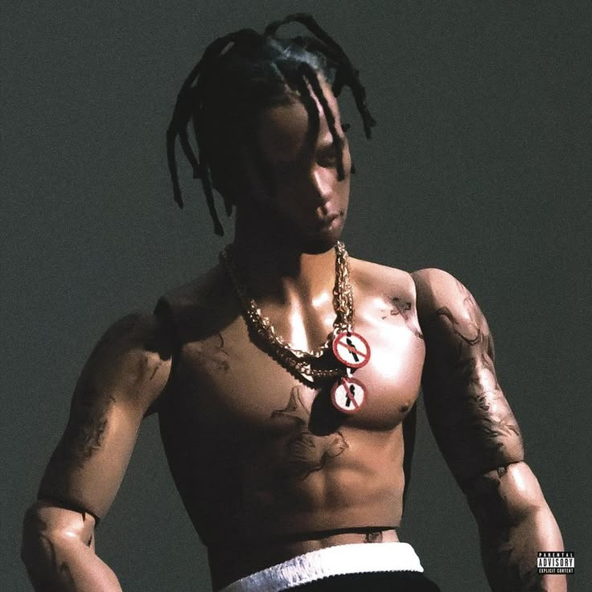
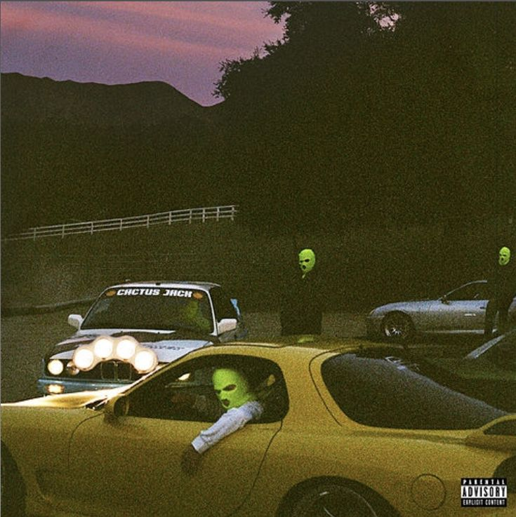
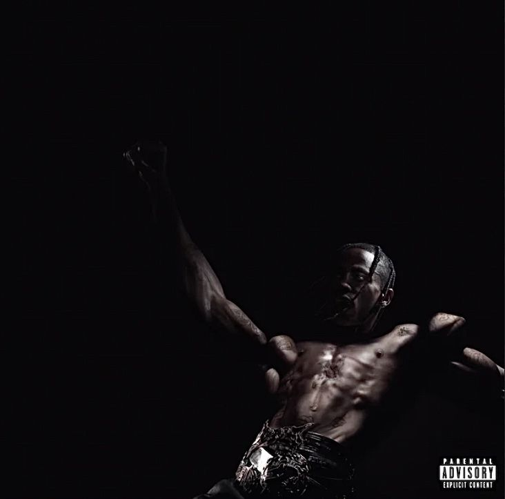

Rodeo
- Sobre: Lançado em 2017 traz um estilo musical de trap psicodélico, rap melódico e influências de rock.
- Curiosidades: O álbum é uma homenagem ao parque de diversões AstroWorld de Houston, que fechou em 2005.
- Música mais Marcante: "SICKO MODE"
Astroworld
- Sobre: Lançado em 2017 traz um estilo musical de trap psicodélico, rap melódico e influências de rock.
- Curiosidades: O álbum é uma homenagem ao parque de diversões AstroWorld de Houston, que fechou em 2005.
- Música mais Marcante: "SICKO MODE"

Jackboys
- Sobre: Lançado em 2019 continua com o estilo musical de trap psicodélico, diferente de seu Album antecessor usa batidas brutas e mais colaborações com artistas.
- Curiosidades: Foi lançado como uma "coletânea" do selo Cactus Jack, sem aviso prévio.
- Música mais Marcante: "HIGHEST IN THE ROOM"

UTOPIA
- Sobre: Lançado em 2023, traz um estilo musical com uma mistura de trap, rock progressivo e eletrônico.
- Curiosidades: Travis promoveu o álbum com caixas misteriosas espalhadas em desertos e cidades.
- Música mais Marcante: "FE!N" (ft. Playboi Carti)